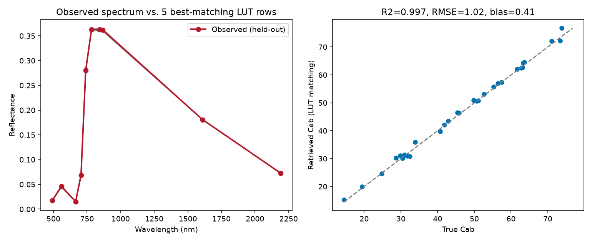

12. LUT Inversion
What you will learn
The LUT-matching (merit-function) inversion concept: observed spectrum -> compare with LUT -> select best simulations -> retrieve traits.
What a merit function is, and how the number of selected matches (
n_opt) trades off noise against bias.How to evaluate a retrieval with R2/RMSE/bias, not just eyeball a plot.
Concept
The simplest inversion strategy needs no training step at all: rank every row of a LUT (11. LUT Generation) by how closely its simulated spectrum matches an observation, then average the trait values of the best matches.
Observed spectrum
|
v
Compare against every LUT row (merit function, e.g. RMSE)
|
v
Rank all LUT rows by match quality
|
v
Select the n_opt best matches
|
v
Average their trait values -> retrieved trait
Python tools used
Function |
Key arguments |
|---|---|
|
Run the example
import numpy as np
import pandas as pd
from toolsrtm import foursail
from toolsrtm.inversion import get_inversion_opt
bands = (490, 560, 665, 705, 740, 783, 842, 865, 1610, 2190)
# 1000-row training LUT (same shape as t11-lut-generation)
rng = np.random.default_rng(1)
rows = []
for _ in range(1000):
Cab, LAI = rng.uniform(10, 80), rng.uniform(0.5, 6)
inputLUT = dict(N=1.5, Cab=Cab, Car=8, Anth=1, Cbrown=0, EWT=0.01, LMA=0.009, alpha=40,
LIDFa=-0.35, LIDFb=-0.15, TypeLidf=1, LAI=LAI, hspot=0.01, tts=30, tto=0, psi=0)
sail = foursail(inputLUT, np.full(2101, 0.15), leaf_model="PROSPECT-D", spectrum_all=True)
row = {"Cab": Cab, "LAI": LAI}
for wl in bands:
row[f"R{wl}"] = sail.rsot[wl - 400]
rows.append(row)
lut_df = pd.DataFrame(rows)
band_cols = [c for c in lut_df.columns if c.startswith("R")]
# 30 independently-simulated "observations" (held out, LUT never sees these Cab/LAI values)
rng2 = np.random.default_rng(99)
test_rows = []
for _ in range(30):
Cab, LAI = rng2.uniform(12, 78), rng2.uniform(0.6, 5.8)
inputLUT = dict(N=1.5, Cab=Cab, Car=8, Anth=1, Cbrown=0, EWT=0.01, LMA=0.009, alpha=40,
LIDFa=-0.35, LIDFb=-0.15, TypeLidf=1, LAI=LAI, hspot=0.01, tts=30, tto=0, psi=0)
sail = foursail(inputLUT, np.full(2101, 0.15), leaf_model="PROSPECT-D", spectrum_all=True)
row = {"Cab": Cab, "LAI": LAI}
for wl in bands:
row[f"R{wl}"] = sail.rsot[wl - 400]
test_rows.append(row)
test_df = pd.DataFrame(test_rows)
result = get_inversion_opt(rfl_sensor=test_df[band_cols].values, rfl_rtm=lut_df[band_cols].values,
lut=lut_df[["Cab", "LAI"]], method="merit-RMSE", n_opt=5)
pred_cab, true_cab = result.lut_best["Cab"].values, test_df["Cab"].values
r2 = np.corrcoef(pred_cab, true_cab)[0, 1] ** 2
rmse = np.sqrt(np.mean((pred_cab - true_cab) ** 2))
bias = np.mean(pred_cab - true_cab)
print(f"R2={r2:.3f} RMSE={rmse:.2f} bias={bias:.2f}")
Result
Printed output (exact, deterministic):
R2=0.997 RMSE=1.02 bias=0.41
{kind=link}

Real output: one held-out observed spectrum against its 5 best-matching LUT rows (left – close enough to be visually indistinguishable), and retrieved vs. true Cab across all 30 held-out observations (right).
Interpretation
R2=0.997 with RMSE=1.02 ug/cm2 (against a true Cab range of ~15-80) is a
genuinely strong retrieval – expected here, since the observations were
drawn from the same simulation model and trait ranges the LUT itself
was built from (no real-world confounding, no sensor noise). The small
positive bias (+0.41) shows the LUT-matching approach is very slightly
over-predicting Cab on average, plausible with only n_opt=5 averaging
a handful of nearest neighbours rather than the true value exactly.
This result is best read as an upper bound on what LUT matching can do
under ideal conditions – 11. LUT Generation’s noise-adding step
and any real sensor/atmosphere confounding will both push R2 down and
RMSE up in a more realistic setting.
Try it yourself
Re-run with
n_opt=1(nearest neighbour only) vs.n_opt=20and compare R2/RMSE/bias – more averaging should reduce noise-driven scatter but can increase bias toward the LUT’s own mean.Add the noise from 11. LUT Generation to the test observations before inversion, and watch R2 drop from the near-perfect value above.
Switch
methodto"merit-MAE"and check whether the retrieval changes meaningfully for this trait/noise level.
Common mistakes
rfl_rtm’s bands must be in the exact same order asrfl_sensor’s – a mismatched column order silently compares the wrong bands.LUT matching can only retrieve trait combinations close to something already in the LUT – a LUT with too narrow a trait range (11. LUT Generation) will systematically fail on real observations outside it, not just perform poorly.
A near-perfect R2 like the one here reflects a best-case, no-noise, no-confounding setup – don’t expect the same number on real satellite data (18. Applying an Inversion Model Spatially).
Next
13. Machine-Learning Inversion – training a reusable model instead of comparing against the LUT every time.
Using R? -> ToolsRTM Tutorial 11: Hybrid Inversion